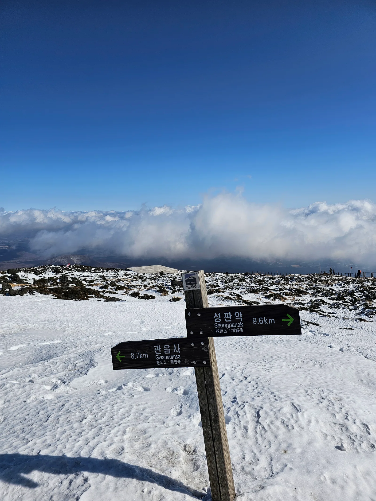
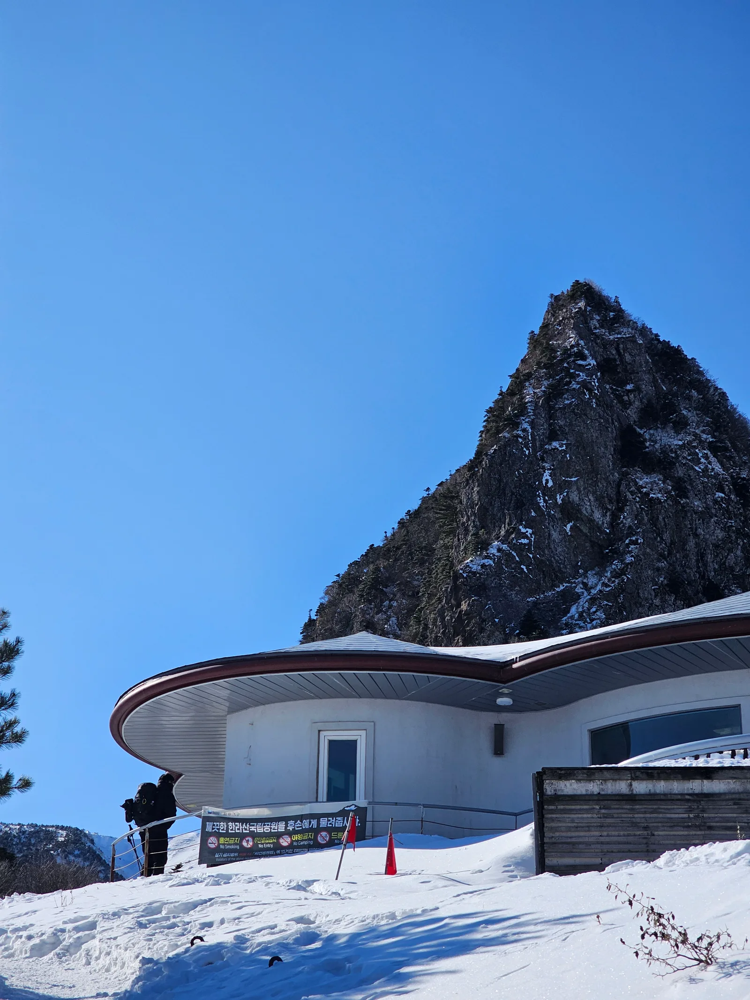
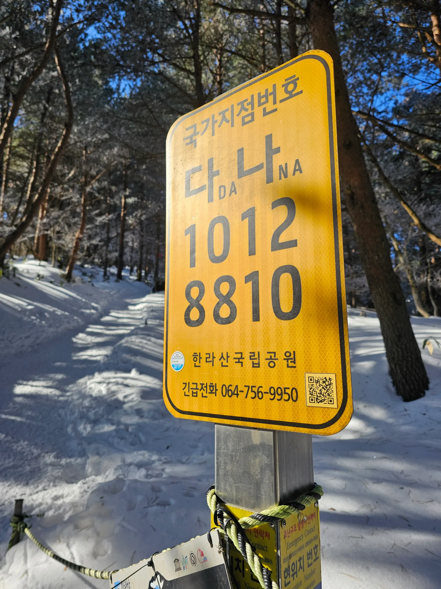
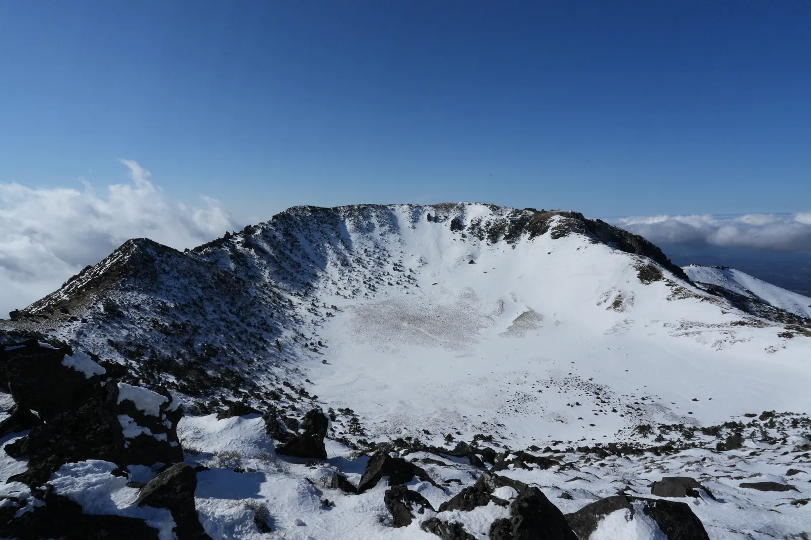

▲ 한라산 정상의 이정표. 성판악 9.6km, 관음사 8.7km 거리가 표시돼 있다(겨울 촬영) ⓒ Sadopaul, Wikimedia Commons (CC BY 4.0)
한라산에 자차로 가려는 사람이라면 올해 바뀐 두 가지를 알고 가야 한다. 하나는 예약이 완화됐다는 것, 다른 하나는 주차비가 대폭 인상됐다는 것이다. 방향이 정반대인 두 변화가 같은 시기에 겹쳤다.
1. 예약 — 백록담에 갈 때만 필요해졌다

▲ 관음사 코스의 삼각봉 대피소. 여기까지는 예약 없이 오를 수 있고, 이 위 백록담 구간부터 예약이 필요하다(겨울 촬영) ⓒ Sadopaul, Wikimedia Commons (CC BY 4.0)
제주도는 2021년 1월부터 성판악(9.6km)과 관음사(8.7km) 탐방로 전 구간에 예약제를 적용해 하루 탐방객을 성판악 1,000명, 관음사 500명으로 제한해왔다. 그러다 5월 3일부로 예약 구간을 정상부로 축소했다. 이제 성판악에서 진달래밭(7.3km)까지, 관음사에서 삼각봉(6km)까지는 예약 없이 자유롭게 오를 수 있다.
다만 그 위쪽, 즉 진달래밭에서 백록담까지와 삼각봉에서 백록담까지 구간은 기존처럼 예약이 필요하다. 예약자는 홈페이지에서 예약한 뒤 탐방로 입구에서 QR코드를 인증하고 비표를 받아야 정상부에 오를 수 있다. 어리목, 영실, 돈내코, 어승생악, 석굴암 코스는 애초에 예약 대상이 아니다.
한라산탐방 예약시스템에서 예약하기2. 주차 — 1,800원에서 최대 13,000원으로

▲ 한라산국립공원 탐방로의 위치 표시판. 긴급 상황 시 이 번호로 위치를 알릴 수 있다(겨울 촬영) ⓒ Sadopaul, Wikimedia Commons (CC BY 4.0)
자차 이용자에게 실질적으로 더 큰 변화는 주차 요금이다. 2026년 1월부터 한라산국립공원 공영주차장 요금 체계가 1일 정액제에서 시간당 가산요금제로 바뀌었다. 기존에는 승용차가 하루 1,800원이면 됐지만, 새 체계에서는 머문 시간에 비례해 요금이 붙어 최대 13,000원까지 올라간다.
| 구분 | 변경 전 | 변경 후(2026년 1월~) |
|---|---|---|
| 요금 방식 | 1일 정액제 | 시간당 가산요금제 |
| 승용차 기준 | 1,800원 | 최대 13,000원 |
한라산 등반은 코스 특성상 장시간이 걸린다. 성판악은 편도 9.6km에 약 4시간 30분, 관음사는 8.7km에 왕복 8~9시간이 걸리는 코스다. 하루 종일 차를 세워두는 것이 사실상 전제인 만큼, 정액제에서 시간제로의 전환은 곧 대부분의 등반객이 상한선에 가까운 요금을 내게 된다는 뜻이다.
3. 코스별 거리와 시간
| 코스 | 거리 | 소요시간 | 예약 |
|---|---|---|---|
| 성판악 | 9.6km | 편도 약 4시간 30분 | 진달래밭(7.3km) 이후 필요 |
| 관음사 | 8.7km | 왕복 8~9시간 | 삼각봉(6km) 이후 필요 |
| 어리목·영실 | - | 왕복 서너 시간 | 불필요 |
백록담 정상을 목표로 하지 않는다면 어리목이나 영실 코스가 시간·비용 면에서 부담이 적다. 정상 인증이 목적이 아니라 한라산의 풍경을 보는 것이 목적이라면, 예약 절차와 긴 주차 시간을 모두 피할 수 있는 선택지다.
4. 예약은 언제, 어떻게

▲ 한라산 백록담 분화구(겨울 촬영). 정상부에 오르려면 사전 예약과 QR 인증이 필요하다 ⓒ Sadopaul, Wikimedia Commons (CC BY 4.0)
예약은 한라산탐방 예약시스템(visithalla.jeju.go.kr)에서 진행한다. 매월 첫 업무개시일 오전 9시부터 다음 달 이용분을 신청할 수 있고, 1인당 최대 4명까지 예약할 수 있다. 일일 정원은 성판악 800명, 관음사 400명이다. 예약 후에는 반드시 탐방로 입구에서 QR 인증을 하고 비표를 받아야 정상부 진입이 허용된다.
5. 정리
체크포인트
- 백록담까지 갈 게 아니라면 예약 없이 성판악 진달래밭·관음사 삼각봉까지 오를 수 있다.
- 정상부는 여전히 예약 대상이며, QR 인증 후 비표 수령이 필수다.
- 2026년 1월부터 주차가 시간제로 바뀌어 최대 13,000원까지 나온다. 장시간 등반이 전제인 코스라 부담이 커졌다.
- 시간·비용을 줄이려면 어리목·영실 코스가 대안이다.
- 예약은 매월 첫 업무개시일 09시 오픈, 정원은 성판악 800명·관음사 400명이다.
문의는 한라산탐방 예약시스템 고객센터 064-713-9953, 어리목본소 064-713-9950~1, 성판악지소 064-725-9950이다.